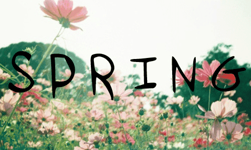
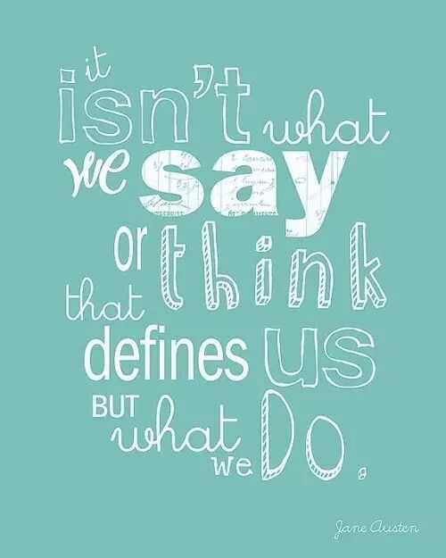
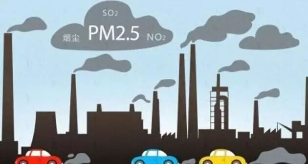

Time：19:30-21:30, Friday, 14th April
Venue: Room B104, The New Main Building, Beihang University.
Table Topic: Spring
Toastmaster: Carrie
Table Topics Master: Huanhuan

"No matter how long the winter, spring is sure to follow." ——Proverb
Prepared speech part(CC)
No.1 speaker: Brittey Why I always think in mind without action--CC6

"Why I always think in mind without action？" It's really a serious problem .Have you ever asked yourself the same question? And do you get the answer? Let's wait and see how Brittey anwser the question.
No.2 speaker: Grace How to survive in pm2.5 city--CC4

Are you scared of PM2.5？ Are you more scared of living in a PM2.5 city? If you are,just wait for a beautiful girl,Grace, telling you how to survive in the PM2.5 city.If you are not, just come our meeting and tell us how to be a positive person like you~
Toastmasters International (TI) is a non-profit educational organization that operates clubs worldwide for the purpose of helping members improve their communication, public speaking, and leadership skills.


https://mp.weixin.qq.com/s/0xer7SINupcg6-GhCJQTSQ
本页为抢救式本地归档，图文已永久保存。